A Sociologia
Muitas pessoas se perguntam: onde vamos parar com o desenvolvimento das novas tecnologias da informação
e da inteligência artificial? Que mundo estamos construindo? Será que passaremos a nos relacionar somente por
dispositivos digitais? Essas são algumas perguntas que os sociólogos também fazem ao observarem as grandes
transformações no mundo.
Se novas tecnologias geram questionamentos sobre nós e o futuro da sociedade, imagine quantas perguntas
surgiram no século XIX, na Europa, quando se popularizou o uso do motor a vapor. Inventado no século anterior, ele
revolucionou o cotidiano ao possibilitar a criação de máquinas baseadas na utilização do carvão como combustível,
impulsionando a Revolução Industrial.
Além da indústria, os motores a vapor transformaram, em grandes proporções, algumas atividades agrícolas,
assim como a mineração, a comunicação e os meios de transporte, substituindo, por exemplo, os moinhos de vento
na geração de energia e o transporte marítimo entre regiões distantes, que dependiam de condições climáticas
favoráveis. Também substituiu com sucesso o uso da tração animal para o transporte de matéria-prima.
O deslocamento da população das zonas rurais até as cidades teve sua duração reduzida com a invenção das
locomotivas a vapor e a instalação das vias férreas, que se espalharam por todos os continentes. Nesse processo
de mudanças, surgiram diversas profissões.
Talvez atualmente seja difícil entender as consequências revolucionárias da invenção da máquina a vapor,
durante o século XIX e as primeiras décadas do século XX, na vida de parte considerável da população.
Desde então, muitas invenções mudaram o cotidiano, as formas de trabalho, a relação entre os governos e a
percepção das desigualdades sociais. Surgiram várias perguntas sobre esse novo mundo e, com base nelas,
intelectuais e estudiosos das sociedades europeias, no século XIX, começaram a desenvolver teorias sobre o impacto social dessas grandes mudanças.
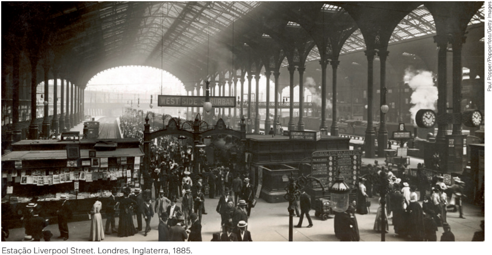
O contexto do surgimento da Sociologia
A Sociologia é uma ciência relativamente nova, com pouco mais de um século, que, como
disciplina acadêmica, desenvolveu-se em um momento de intensas transformações da sociedade europeia.
A partir do século XVI, ocorreram grandes transformações econômicas: as trocas
comerciais se expandiram e os europeus entraram em contato com povos da Ásia, da África e das Américas.
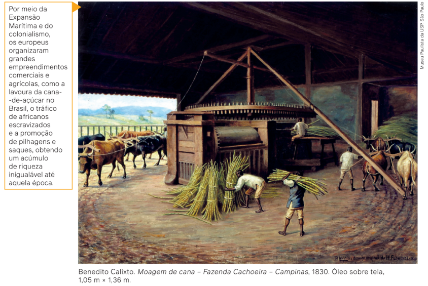
A Expansão Marítima e, consequentemente, o acúmulo de riquezas – especialmente do
ouro e da prata das Américas – foram acompanhados por um grande investimento nas ciências
e pelo florescimento e pela expansão da cultura europeia. A partir do Renascimento, em meados do século XIV, os europeus disseminaram com sucesso a ideia de que o indivíduo europeu
era o modelo universal de razão e humanidade.
A partir do século XVIII, com a primeira Revolução Industrial, a produção de mercadorias
expandiu-se, assim como o crescimento das cidades. Um grupo social em ascensão – a burguesia – tornou-se dominante, tomando o lugar da nobreza e do clero, que até então comandavam
a sociedade feudal europeia. Formada por proprietários de fábricas, terras e matérias-primas,
a burguesia acumulou para si o resultado da produção das riquezas.
Paralelamente a esse processo, ocorreram grandes transformações políticas. Com o poder
econômico da burguesia, os feudos medievais começaram a desaparecer e iniciou-se o surgimento dos Estados Nacionais. Em 1789, a Revolução Francesa, inspirada pelo Iluminismo e sob
o lema “liberdade, igualdade e fraternidade”, declarou que os seres humanos eram todos iguais
perante a lei e tinham direitos universais. Vale ressaltar que os europeus se consideravam universais, mas, enquanto diziam que “todos eram iguais perante a lei”, várias nações europeias,
até meados do século XIX, ainda escravizavam africanos e ameríndios. Entretanto, lançaram-se, assim, as bases políticas do que, mais tarde, seria a cidadania. Esse tema será estudado
posteriormente, com mais atenção.
A Revolução Francesa fez com que muitas ideias sobre liberdade e igualdade triunfassem
sobre a concepção de autoridade divina, ou seja, a ideia de que havia alguns indivíduos “ungidos” de poder pela vontade de Deus e outros que deveriam obedecer-lhes. Dali em diante,
grandes teorias que questionavam a ordem feudal e o Absolutismo passaram a ser colocadas em prática na política das sociedades europeias. Entre elas, havia teorias sobre temas
como democracia representativa, direitos humanos, Estado e liberdade comercial, produzidas por pensadores como John Locke (1632-1704), Jean-Jacques Rousseau (1712-1778),
Montesquieu (1679-1755) e Adam Smith (1723-1790), entre outros.
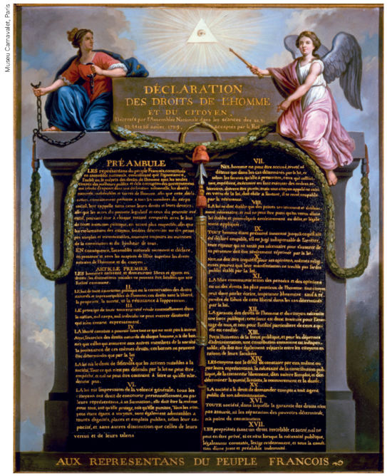
Jean-Jacques-
-François Le Barbier.
Representação
da Declaração dos
Direitos do Homem
e do Cidadão,
c. 1789. Óleo
sobre madeira,
71 cm x 56 cm.
A Revolução Industrial modificou a vida dos europeus: alguns – a burguesia – passaram a ter mais conforto com as máquinas a vapor e a concentrar a riqueza produzida; outros – o proletariado – viviam e trabalhavam em condições deploráveis nos bairros operários e nas fábricas, com uma jornada diária de até 14 horas, sem qualquer segurança ao operar as máquinas. Esses trabalhadores, ao migrarem do campo para as cidades, passaram por mudanças no modo de vida. Essas transformações revolucionaram as relações entre os indivíduos, colocando em segundo plano as explicações religiosas e míticas sobre os comportamentos humanos.
Nesse contexto, em que a religião não era mais considerada a única fonte de respostas, alguns pensadores se questionavam: por que a sociedade é assim? Por que alguns indivíduos se comportam de um jeito e outros agem de modo diferente? Por que as sociedades mudam? Jean-Jacques Rousseau, antes da Revolução Francesa, já dizia que o ser humano nasce puro, mas a sociedade o corrompe. É nesse período da história europeia que apareceram as indagações sociológicas, como as perguntas acima.
A Sociologia, portanto, surgiu nesse contexto de mudanças, com a necessidade do indivíduo europeu de explicar cientificamente o mundo, suas relações com as pessoas e com as outras sociedades.
Ora, como explicar que, na Europa, com toda a riqueza gerada pela Revolução Industrial, houvesse o aumento da pobreza e da miséria dos trabalhadores? Por que a Revolução Francesa clamava por igualdade e fraternidade, mas o que se via era o aumento da desigualdade social e econômica?
Por que nas Américas, entre os povos indígenas, apesar das hierarquias entre eles, aparentemente não havia pessoas passando fome antes da chegada dos europeus? Por que na África havia sociedades inteiramente diferentes das europeias, com costumes, deuses e tradições familiares próprios?
Estava em curso o afastamento dos indivíduos europeus das explicações de origem divina em direção ao predomínio da razão humana: tudo passava a ser explicado pelos seres humanos, não somente por Deus. Com o desenvolvimento das técnicas e das ciências, o controle do ambiente natural pelos europeus aumentou ainda mais. Enfim, fazia-se necessária uma explicação para essas mudanças, com a elaboração de leis científicas, conceitos e teorias.
Sociologia: uma ciência positiva
A invenção do termo Sociologia é atribuída ao francês Auguste Comte (1798-1857). Sua intenção era criar uma ciência que explicasse a vida em sociedade da mesma forma que as ciências da
natureza explicam o mundo natural. Ele queria, assim, descobrir leis que governassem a vida social
humana para ajudar a construir um futuro melhor considerando o bem-estar dos indivíduos. Uma
de suas contribuições nessa área foi a lei dos três estágios, segundo a qual o conhecimento do
mundo pelos seres humanos passaria por três estágios: o teológico, o metafísico e o positivo.
No estágio teológico, o pensamento humano seria guiado pelas religiões. Em seguida,
evoluiria para o estágio metafísico, e a sociedade passaria a ser vista com base em critérios
conceituais, não mais sobrenaturais. Por fim, haveria a evolução para o estágio positivo, no
qual o conhecimento da realidade passaria pelo método científico. É nesse estágio que apa-
rece, segundo Comte, a ciência da sociedade – a Sociologia –, que consistiria, conforme sua
classificação, em uma ciência positiva.
Auguste Comte
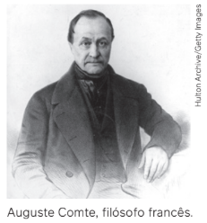
O filósofo Isidore Auguste Marie François Xavier Comte, nascido em Montpellier,
na França, ficou conhecido como o responsável pela formulação do positivismo,
doutrina social que entendia a ciência e a tecnologia como uma “nova religião”, cujo
“deus” era a razão.
O positivismo, por esse motivo, foi nomeado por Comte como a “Religião da Humanidade”. Apesar de originalmente influenciada pelo socialista utópico Saint-Simon, a filosofia positiva de Comte tinha caráter conservador, pois defendia a manutenção da ordem social e a submissão de todos os indivíduos aos interesses da sociedade.
Comte é conhecido também como um dos pais da Sociologia, ciência que ele chamou inicialmente de “física social”, cujo objetivo era analisar leis sociais que regem o comportamento humano.
O positivismo, por esse motivo, foi nomeado por Comte como a “Religião da Humanidade”. Apesar de originalmente influenciada pelo socialista utópico Saint-Simon, a filosofia positiva de Comte tinha caráter conservador, pois defendia a manutenção da ordem social e a submissão de todos os indivíduos aos interesses da sociedade.
Comte é conhecido também como um dos pais da Sociologia, ciência que ele chamou inicialmente de “física social”, cujo objetivo era analisar leis sociais que regem o comportamento humano.
Além das concepções formuladas por Auguste Comte, diversas teorias foram elaboradas
a partir do século XIX. Destacaremos, aqui, os três autores considerados pela maioria dos
pesquisadores de Sociologia como grandes referências desse campo do conhecimento. São
eles Karl Marx (1818-1883), Émile Durkheim (1858-1917) e Max Weber (1864-1920). Esses três
autores são chamados de clássicos porque representam algumas das principais teorizações
europeias acerca das relações entre indivíduo e sociedade. Em razão da importância, da
extensão e da influência de suas obras em quase todo o mundo, eles são considerados
fundadores da Sociologia como disciplina.
As teorias desses três sociólogos nos acompanharão daqui em diante, uma vez que serviram de base para as formulações de diversos intelectuais da Europa e de outros continentes.
Nos capítulos seguintes, debateremos teorias sociológicas de pesquisadores de fora da
Europa.
Karl Marx: “É necessário
mudar o mundo”
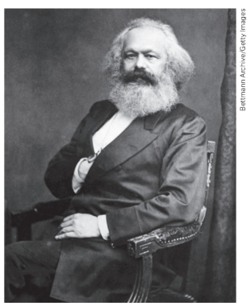
Karl Marx nasceu em Tréveris, na Alemanha, e faleceu em Londres,
na Inglaterra, aos 65 anos de idade. Seu principal objeto de estudo
foi a sociedade capitalista de sua época. Marx não se preocupava
somente com a análise, mas também com a ação militante de organi
zação e luta contra as injustiças inerentes ao capitalismo. Em um de
seus escritos filosóficos, Marx afirmou que era necessário aos pensadores
intervir na realidade com o objetivo de modificá-la, e não simplesmente interpretá-la.
A análise de Marx sobre a sociedade passa pela compreensão de que os indivíduos, no decorrer da história, relacionam-se com os outros e com a natureza de determinada maneira. Para analisar a realidade social, portanto, é necessário observar como o ser humano transforma a natureza por meio do trabalho e quais relações ele estabelece com outros indivíduos. Nesse sentido, o trabalho é entendido por Marx como a essência da existência humana.
A análise de Marx sobre a sociedade passa pela compreensão de que os indivíduos, no decorrer da história, relacionam-se com os outros e com a natureza de determinada maneira. Para analisar a realidade social, portanto, é necessário observar como o ser humano transforma a natureza por meio do trabalho e quais relações ele estabelece com outros indivíduos. Nesse sentido, o trabalho é entendido por Marx como a essência da existência humana.
Karl Marx, filósofo alemão, um dosformuladoresdo materialismo histórico.
Marx era materialista, não no sentido do senso comum, mas no entendimento de que os
seres humanos constroem sua história e suas relações sociais por meio da produção material,
ou seja, pelo trabalho. Em todas as sociedades, por intermédio do trabalho, os seres humanos
relacionam-se com outros e, juntos, constroem a sociedade, no que Marx chamou de relações
sociais de produção. Segundo ele, essas relações têm características específicas, que variam
ao longo da história e conforme a sociedade. Além disso, essas relações são estabelecidas em
meio a contradições e conflitos entre os indivíduos.
Com o aumento da produção de riquezas no decorrer da história, ocorreu a divisão do trabalho. Observaram-se tanto divisões entre agricultores e pescadores, homens e mulheres, trabalho
manual e intelectual quanto entre proprietários e não proprietários dos meios de produção
(terras, fábricas, instrumentos de trabalho, entre outros), ou seja, a formação das classes sociais.
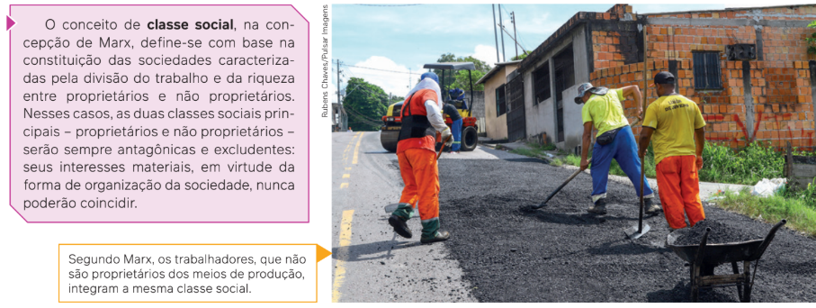
Trabalhadores
fazem o
recapeamento de
asfalto. Manaus
(AM), 2022.
Com base nessa concepção, Marx afirma que o que move a história humana nas grandes
transformações é a luta de classes, com uma classe proprietária dos meios de produção que
explora economicamente e domina politicamente a outra. Essa classe dominada, não proprie
tária dos meios de produção, é formada pelos trabalhadores – escravos, servos ou proletários
(trabalhadores assalariados), dependendo de como as sociedades se constituíram histori
camente. A classe de não proprietários, por ser a que de fato produz socialmente a riqueza
mediante seu trabalho, é a classe que, segundo Marx, com base na consciência de classe
(a tomada de consciência da própria condição de classe explorada), pode subverter sua su
bordinação, levantar-se contra os proprietários e apropriar-se da riqueza, constituindo, nesse
processo, uma sociedade igualitária por meio da distribuição da riqueza.
Essas mudanças radicais que podem ocorrer na história são conhecidas como revoluções sociais. Na visão
de Marx, significam uma mudança em momentos de grandes crises sociais, políticas e econômicas, com conflitos
abertos e violentos entre as classes antagônicas, abrindo a possibilidade de derrubada das classes dominantes
pelas classes dominadas. Nesse sentido, a Revolução Industrial e a Revolução Francesa significaram a ascensão e a
tomada do poder por uma classe social, a burguesia, que até então era subordinada à nobreza e ao clero. Por esse
motivo, essas revoluções foram definidas por Marx como revoluções burguesas.
Em relação ao mundo feudal preexistente na Europa, Marx entendia que essas revoluções eram “progressistas”,
pois constituíram uma sociedade moderna, capitalista, livre das amarras que impediam o desenvolvimento econômico
e tecnológico. Marx, no entanto, defendia que essas revoluções burguesas fossem superadas por outra revolução
mais radical, na qual a classe dos não proprietários se apropriaria dos meios de produção e do poder político nas mãos
da burguesia. Ele se referia, nesse caso, à necessidade de que o proletariado realizasse uma revolução socialista.
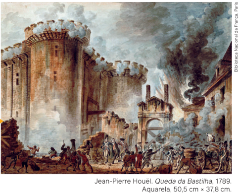
Para Marx, o papel do indivíduo na história
e na sociedade não pode ser entendido sem
levar em consideração a classe social à qual
pertence, ou seja, a posição que o indivíduo
ocupa nas relações sociais de produção. Essa
análise é chamada de materialismo histórico.
Em outras palavras, o indivíduo na sociedade
age de acordo com sua posição social nas re
lações de produção; portanto, para entender
as ações dos indivíduos, é necessário observar
suas trajetórias inseridas em uma classe social.
Marx viveu no século XIX, época de intensas transformações na Europa, com a eclosão e a expansão de diversas revoluções burguesas. Ele vivenciou as consequências delas, contribuindo sociologicamente para a compreensão dessas revoluções. Ao mesmo tempo, Marx considerava a situação da classe trabalhadora injusta e afirmava que era necessário modificá-la radicalmente.
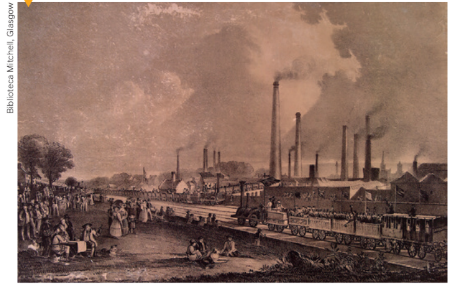
Assim, conforme sua análise sobre a sociedade
capitalista da época, Marx propôs que a classe ex
plorada – ou seja, a maioria dos indivíduos, traba
lhadores assalariados que não possuíam os meios
de produção (fábricas, terras, entre outros) –, se or
ganizassem em associações, sindicatos e partidos
políticos. Primeiramente, o objetivo seria a forma
ção política e a tomada de consciência de classe, na
condição de classe trabalhadora.
Reprodução de pintura que retrata a indústria química St. Rollox
Chemical Works na inauguração
da ferrovia entre Garnkirk e
Glasgow. Escócia, 1831.
Depois, a construção de uma nova sociedade, sem a participação dos
proprietários privados dos meios de produção (ou
seja, industriais, grandes comerciantes, banquei
ros), de modo que a riqueza fosse apropriada coleti
vamente pelos trabalhadores.
Émile Durkheim: “A sociedade está
na cabeça de cada pessoa”
Émile Durkheim nasceu em Épinal e faleceu em Paris, cidades na França, com 59 anos de
idade. Influenciado pelas ideias de Auguste Comte, é considerado o pai da Sociologia acadê
mica, pois foi o autor que sistematizou, definiu e aplicou a Sociologia nas universidades fran
cesas, no final do século XIX.
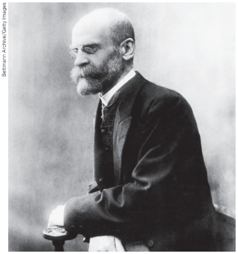
tÉmile Durkheim,
professor, filósofo,
antropólogo,
sociólogo e
cientista político
francês.
Na segunda metade do século XIX, a Europa, e em especial a França, vivia grandes con
flitos sociais, como insurreições e revoluções. Durkheim, nesse contexto, preocupado com a
estabilidade da ordem social francesa, quis entender o funcionamento dos mecanismos da
sociedade de sua época.
Durkheim afirmava que a sociedade molda comportamentos, atitudes, ideias e ações dos
indivíduos por meio de fatos sociais, que, segundo ele, apresentam três características:
• generalidade: além de serem comuns à maioria dos indivíduos em uma sociedade, os fatos
sociais existem independentemente da presença desses indivíduos;
• exterioridade: a presença dos fatos sociais na sociedade é exterior aos indivíduos, sendo
internalizados por eles por meio do processo de socialização;
• coercitividade: os fatos sociais exercem tanto “uma influência coercitiva”, ou seja, um
poder de pressão, de obrigação, quanto uma força social que orienta e molda o comporta
mento de forma sutil.
De acordo com Durkheim, quando uma pessoa nasce, já encontra fatos sociais estabelecidos coletivamente, os quais a seguirão por sua vida e se manterão depois de sua morte.
A forma como esses fatos são representados na vida de cada um de nós é que define o
que Durkheim chama de consciência coletiva. Ela é formada por ideias comuns a todos e está
espalhada na sociedade, constituindo uma consciência de sociedade, que define nossa con
duta. É a consciência coletiva que vai impor as regras sociais que precisarão ser obedecidas
por cada indivíduo, ou seja, as normas de comportamento.
A consciência coletiva, por sua vez, se manifesta por meio da cooperação entre
os indivíduos. Durkheim define essa cooperação como divisão social do trabalho, já que se relaciona
com o nível de especialização das funções entre os indivíduos em dada sociedade.
A divisão do trabalho social, para Durkheim, está relacionada a outra definição importante:
a de solidariedade. Esta dependeria do número de especializações na sociedade, subdividindo
-se de duas formas: solidariedade mecânica e solidariedade orgânica. Aqui, o termo “solidarie
dade” significa cooperação entre os indivíduos.
A solidariedade mecânica é
típica de sociedades nas quais a
divisão do trabalho social é pouco
diferenciada, distinguindo-se somente em alguns papéis sociais
conforme a função do gênero
(homem ou mulher) ou da idade.
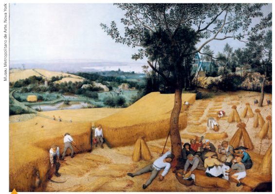
Na
definição de Durkheim, a solidariedade mecânica é característica de
sociedades chamadas por ele de
“tribais” e “feudais”, nas quais há
pouco desenvolvimento tecnológico.
Nessas sociedades, a solidariedade não ocorre em função de
alguma dependência relacionada
ao trabalho, mas sim por causa da
tradição, da religião ou de alguma
forma de sentimento comum. Nelas
há, portanto, pouca divisão do trabalho social.
O cultivo coletivo da terra na sociedade feudal é um exemplo de solidariedade mecânica.
A solidariedade orgânica, por sua vez, é típica das sociedades industriais, nas quais a divisão do trabalho social é diferenciada e complexa, e os indivíduos estão juntos porque fazem
atividades diferentes – são interdependentes. Nessas sociedades, em que a divisão do trabalho social é intensa, a solidariedade é dada pela especialização das funções e pela divisão
profissional do trabalho.
Além da solidariedade, a divisão do trabalho gera também coesão social, ou seja, princípios, regras e normas que estabelecem união e harmonia entre os membros da sociedade.
Um dos exemplos estudados por Durkheim é a religião, já que seus princípios e normas têm a
função de garantir a coesão e a solidariedade entre seus membros.
Assim, quando Durkheim constrói sua teoria, está considerando que o indivíduo é também
um ser social, ou seja, foi socializado partindo do que já existe na consciência coletiva.
Se levássemos alguém do lugar onde vive para outra sociedade, ou mesmo para uma ilha
deserta, certamente essa pessoa levaria muito da sociedade consigo. O indivíduo é um ser
com personalidade própria; ao mesmo tempo, a sociedade vive em sua mente.
Outro debate teórico importante desenvolvido por Durkheim relaciona-se com sua preocupação quanto à estabilidade da sociedade. Situações de instabilidade geram o que ele chamou
de anomia, isto é, a ausência de regras, normas e limites (como se depreende da própria etimologia
da palavra, derivada do grego nómos, que significa “norma”, precedida pelo prefixo a-,
indicando negação). A anomia em dada sociedade, segundo Durkheim, pode ser causada pelo
excesso de individualismo (egoísmo) ou por alguns tipos de desvio e desequilíbrio de outra
ordem, que abalariam a rotina de “normalidade” da vida, interrompendo a solidariedade e a
coesão. Esses processos de anomia poderiam ser causados por guerras ou outros conflitos armados, por exemplo, ou altos índices de criminalidade e até mesmo greves e revoltas da classe
trabalhadora que interferissem na rotina da sociedade a ponto de alterar seu funcionamento.
Max Weber: “Só fazemos
o que faz sentido”
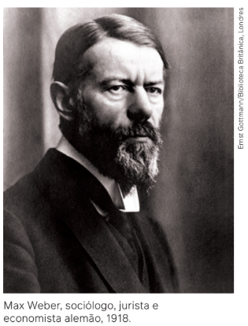
Max Weber nasceu em Erfurt e faleceu, aos 56 anos, em Munique, cidades da Alemanha. Os estudos de Weber, considerado um dos mais com-
plexos e eruditos entre os teóricos da Sociologia, têm raízes filosóficas no
pensamento alemão do século XIX. Diferentemente de Marx e Durkheim, o
pressuposto básico de Weber é o de que a sociedade é resultado das diversas ações dos indivíduos, e que todos são capazes de agir livremente, de
acordo com dadas alternativas.
Para Weber, todo indivíduo é dotado da capacidade e vontade para assumir uma posição consciente no mundo. No entanto, como a realidade humana é diversificada, não seria possível compreendê-la em sua totalidade, mas
somente as inter-relações entre determinados fenômenos.
Weber diz que, para compreender a sociedade, é preciso entender a
ação social, isto é, uma ação que o indivíduo realiza quando leva em
consideração, em suas atitudes e intenções, as ações dos outros indivíduos. Para
Weber, a ação humana tem necessariamente um sentido, portanto é possível
compreender as ações de vários indivíduos para, então, compreender a
sociedade e sua estrutura. Assim, ele formula classificações e tipologias,
como fez Durkheim.
Weber classifica a ação dos indivíduos em quatro tipos: “tradicional”, “afetivo”, “racional relacionado a valores” e
“racional com relação a fins”. Para ele, todos esses tipos de ação têm uma intencionalidade.
Weber oferece um exemplo bastante simples para trabalhar os quatro tipos de ação: uma pessoa entra em uma
loja para comprar sapatos. Se comprar os sapatos influenciada pela moda, sua ação é do tipo tradicional, com base
no que a maioria faz. Mas, se fizer a compra porque os sapatos lhe agradam, sua ação é do tipo afetivo. Se a compra
dos sapatos considera o fato de que determinado modelo possa lhe dar status ou certo prestígio, sua ação é racional
em relação a valores. Por fim, se o modelo de sapato escolhido é exigido como parte do uniforme de trabalho ou de
alguma outra atividade, sua compra é uma ação do tipo racional com relação a fins.
Apesar da categorização, os tipos de ação não são tão bem delimitados. Ninguém, na prática, vai comprar um
sapato pensando nos tipos de ação separadamente. Nas ações, os tipos se confundem, se encaixam uns nos outros, dependendo do sujeito e do momento.
É importante ressaltar que, para Weber, esses tipos de ação nunca correspondem exatamente ao que acontece
na realidade. Eles são, na verdade, aproximações teóricas e idealizadas da realidade. Por esse motivo, ele se refere a
qualquer uma dessas definições como um modelo – chamado tipo ideal – que serviria de referência para a reflexão
teórica.
Os tipos de ação não significam que os indivíduos agem como querem e bem entendem, pois, segundo Weber, um
indivíduo só age em relação ao comportamento de outros indivíduos. Para Weber, esse é o juízo de possibilidade, a
expectativa de a ação do indivíduo se basear em regulamentos que fazem sentido para vários indivíduos.
Por isso, Weber afirma que, nas sociedades, há uma expectativa recíproca nas ações de cada indivíduo – são as
regras e a ordem social que surgem quando os indivíduos aceitam as normas como se fossem “naturais”. Dessa situação, criam-se as ações esperadas de todos os indivíduos e grupos em determinada sociedade, e disso decorrem
as leis, as instituições, o Estado e a sociedade em geral.
Para Weber, compreender as relações entre indivíduo e sociedade
é compreender os sentidos e os significados das ações
individuais, os pontos de vista dos sujeitos e as interações entre eles,
assim como os significados dessas interações.
Além dessa teoria sociológica da ação dos indivíduos, Weber
escreveu sobre outros assuntos, como o fenômeno da burocracia nas
sociedades modernas, o capitalismo e suas origens nas sociedades
ocidentais, as religiões, o Estado, o poder e os tipos de dominação.
Sua obra tem grande influência no pensamento sociológico desde
então, com reflexos em diversas áreas do conhecimento acadêmico
– como História, Direito e Administração –, fornecendo pistas para
interpretar fenômenos importantes.
Grupo de jovens brasileiros utilizando smartphones. Brasil, 2023.
O uso de redes sociais pode ser considerado uma ação social.
A aplicação das teorias sociológicas em nossa vida
Dependendo da sua história de vida, de seu bairro e de seu país, podemos usar as teorias de Marx, Durkheim
e Weber para imaginar sociologicamente o mundo, conforme o pensamento de Charles Wright Mills (1916-1962).
Considerando que alguns aspectos dessas teorizações nos ajudam a entender o mundo, vamos apresentar dois
exemplos: você já soube de algum conflito por terras em seu município ou estado? Já viu manifestações de grupos
de trabalhadores reivindicando aumento de salário ou melhoria das condições de trabalho?
Nesses casos, seria possível usar algumas das interpretações formuladas por Karl Marx para analisá-los de forma
sociológica. Uma interpretação possível de Marx para os exemplos citados é a de que esses conflitos sociais representam parte de uma luta de classes e que os indivíduos estão se posicionando para reivindicar direitos coletivos e,
assim, transformar a situação em que vivem.
Mais um exemplo: se alguém tiver determinada opinião negativa sobre o casamento de um homem com várias
mulheres, poderia dizer: “essa é minha opinião, eu fui criado assim”. Nesse caso, Durkheim diria que o fato social
chamado “casamento” impõe normas de pensamento e valores sobre os quais não temos controle e que sua
manifestação reflete o pensamento e a tradição das sociedades ocidentais, que reproduzem, em grande parte,
a cultura europeia.
Continuando nosso exercício de imaginação sociológica, se você e os colegas tiverem opiniões diferentes sobre
a obrigação de se casar na igreja, isso pode ser um sinal daquilo que Max Weber fala sobre as ações dos indivíduos
diante das instituições e dos outros sujeitos. Sua ação estará de acordo com as possibilidades, ou seja, levará em
consideração o que seus colegas pensam e esperam de você. Você não agirá sem pensar: agirá racionalmente, de
acordo com as normas e as regras aceitas pela maioria das pessoas.
Se as normas dominantes, que consideram que não se casar na igreja é algo condenável, estiverem, por algum
motivo, sendo questionadas na sociedade brasileira, seu juízo de possibilidade, como diria Weber, poderá levá-lo a
também questionar essa ideia.